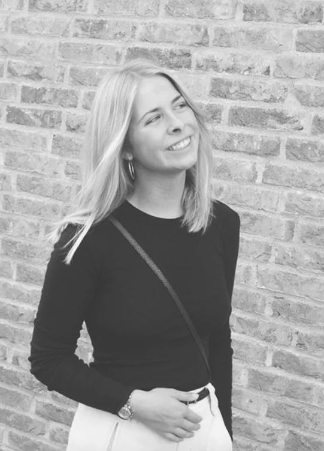
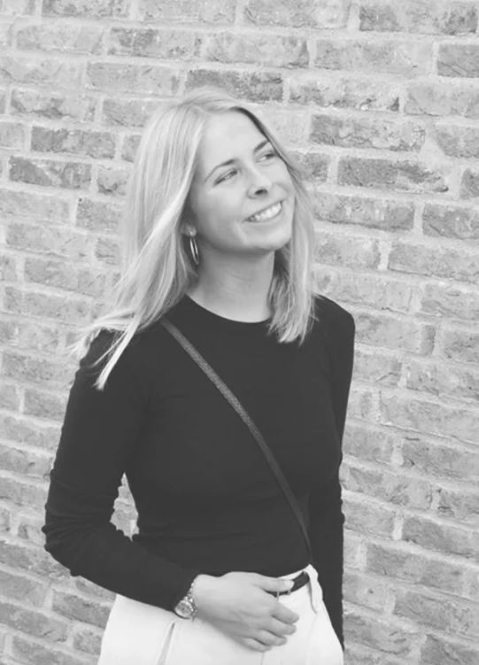

Mit navn er Asta Østerholm Rasmussen Stage. Jeg er 21 år gammel og studere Multimediedesign på Erhversakademiet i Århus. Jeg bruger meget af min fritid sammen med mine veninder og på at træne i fitness.
Jeg er bosat i Århus midtby, hvor jeg også er født og opvokset. Efter folkesklen valgte jeg, at tage 10. klasse på Tirstrup idrætsefterskole, hvilket var et meget lærerigt år for mig. Derefter startede jeg på Århus Business collage i Viby på linjen kommunikation og IT og blev student i sommeren 2017. Jeg valgte at holde et halvt sabbatår, hvor jeg har arbejdet som tjener på Cafe Karma i Bruuns Galleri.
Jeg kan godt lide at rejse og synes det er vildt spændende at opleve andre kulture. og en af mine ynglings destinationer er New York, som jeg har besøgt tre gange indtil videre. Derudover har jeg været i Kina med min folkeskole, hvilket var virkelig interessant. Vi besøgte en kinesisk skole i Harbin og oplevede hvordan de unge studerendes hverdag så ud. Vi skulle også bo hos en kinesisk familie i fem dage, hvor vi skulle følge deres hverdag. Efter vi havde tilbragt fem dage i Harbin skulle vi videre til Beijing, som er en virkelig stor og spændende by.